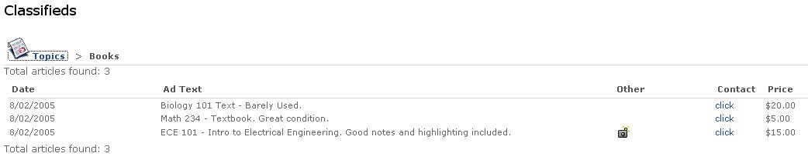
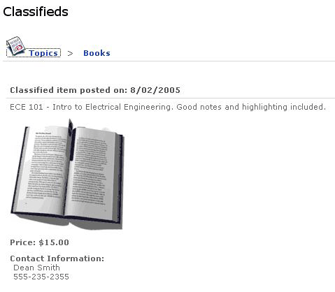

Click the Add a New Classified icon from the default view or the Add Classified link from other channel views to begin the process of adding a new classified. You will be prompted for the following pieces of information:
- Topic
- Message
- Cost (optional)
- Image (optional)
- Contact Information
- Name (Optional)
- Phone or Email Address
Once completed, click the Preview button. This will give you a preview of how the classified will look, once approved and published. After clicking the next button, the classified will be sent to the "approver" assigned by the administrator for the associated topic.
Once you have submitted one or more classifieds, you will notice that a new link is added to your channel (View My Classifieds). This view shows a listing of all your submitted classifieds, their status (e.g., pending, approved, declined), and the specific information associated with the classified. As the owner of the classified, you can also delete the classified.
Approving Classifieds
Once a new classified has been submitted for approval, the "approver" of a classified topic will notice a new link within the channel (Approve Classifieds). Once clicked, this link will take you to a list of those Topics assigned to you that currently have classifieds, which are pending approval.
Once a specific classified has been chosen, the approver can approve or deny the request and send a specific message back to the author. This information will be shown to the author within their View My Classifieds view.
Viewing Classifieds
Classifieds are grouped together by topics. Users can see all topics currently available with open classifieds. The number of open classifieds within a topic, along with the topic name and icon, is shown on the main view of the channel.
Once a topic is chosen, all of the classifieds within that topic are displayed at a summary level. In order to see more detailed information within each classified (e.g. Contact Information, pictures), you will need to select the click link.

